Programação Orientada a Objetos
Uma abordagem prática
Professor Lailson Henrique / @lailsonh
Programação Orientada a Objetos
Objetivos:
- Aproximar o mundo digital ...
- ... do mundo real
Como era antes ?
Como era antes ?
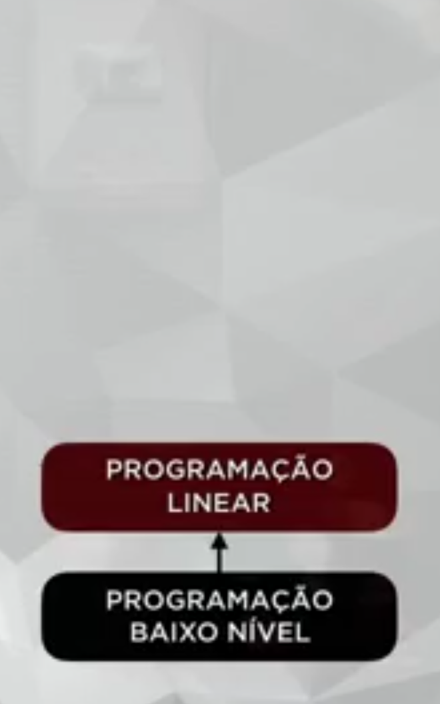Como era antes ?
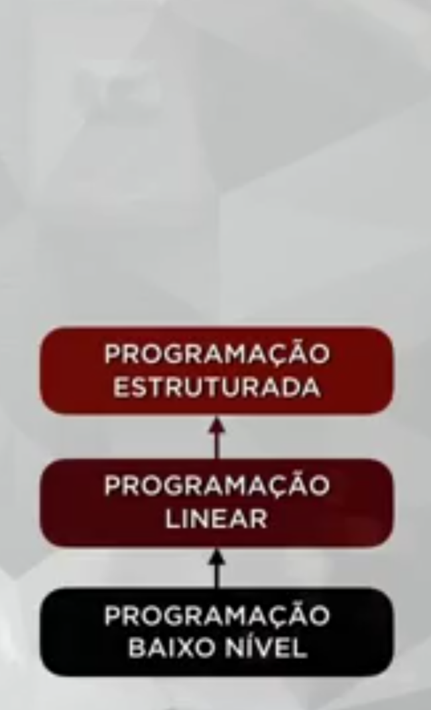Como era antes ?
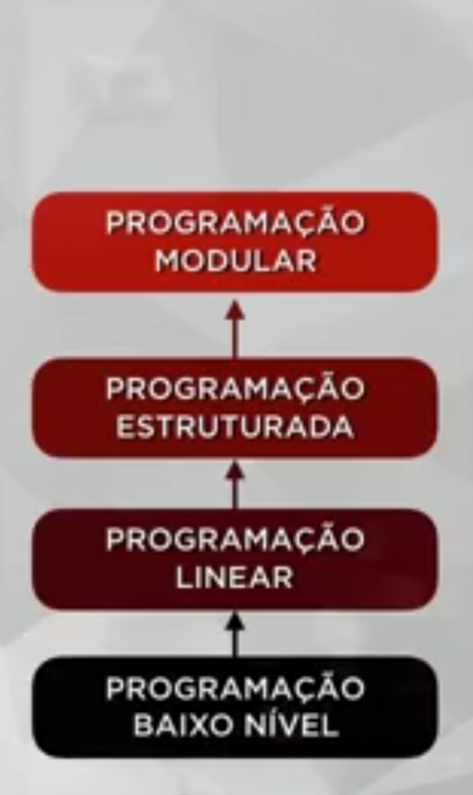Como era antes ?
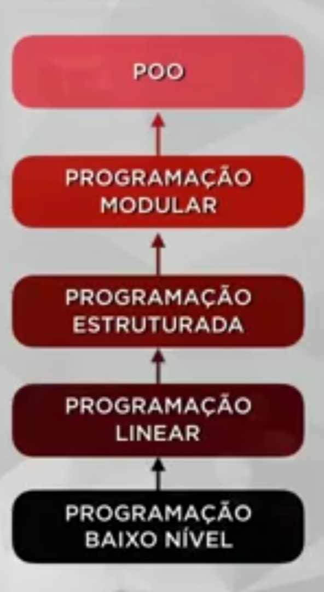Quem criou ?
- Não era programador
- Matemático
- Biologo
- Educador
- Xerox
Alan Kay
- 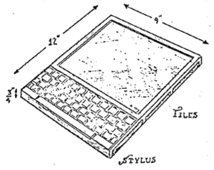
- 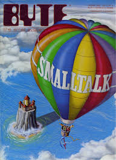
- Apple
- Disney
- HP
Linguagens OO
- C++
- Java
- PHP
- Python
- Ruby
- Visual Basic
Programação Estruturada
- 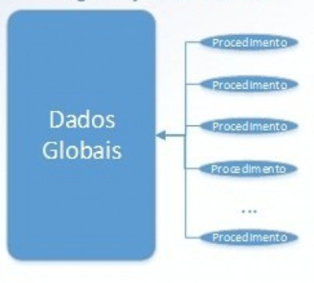
Programação Orientada a Objetos
- 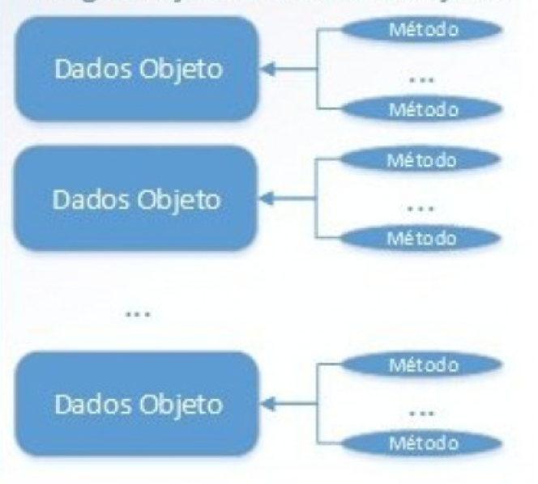
Controle Remoto
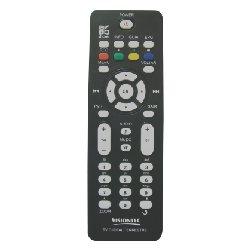Desafio: Programar em Linguagem OO e Linguahem não OO
Linguagem não orientada a objetos
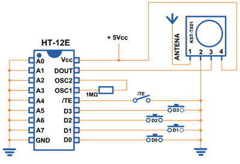- Detalhes
- Circuito
Linguagem orientada a objetos
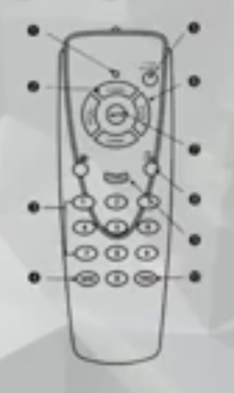- Objeto
- Funcionamento
- Ações
O que é um Objeto ?
Objeto:
É uma coisa material ou abstrata que pode ser percebida pelos sentidos e descrita por meio de suas características, comportamento e estado atual.
Classe
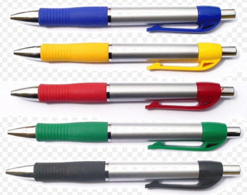
Dúvidas ?
FIM!
THE END
Transition Styles
You can select from different transitions, like:
Cube -
Page -
Concave -
Zoom -
Linear -
None -
Default